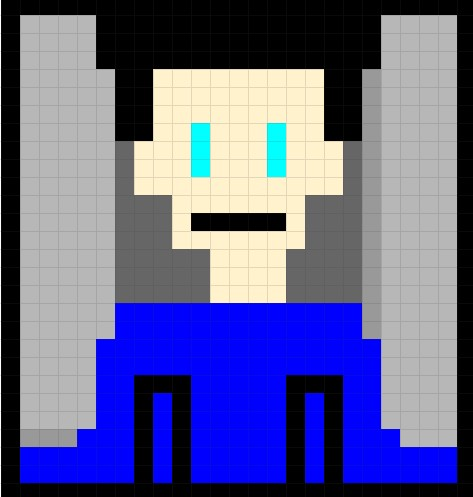
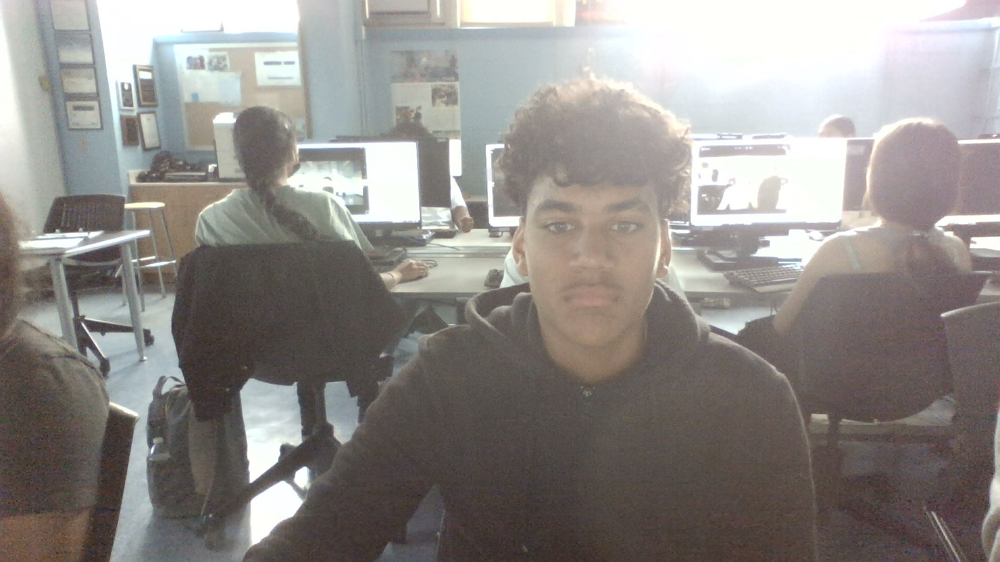

Brandon Goico
Thomas A. Edison CTE High School
The Journey as a Web Developer
10/6/22
Lab 7


Brandon Goico here. I'm a student at Thomas Edison High School in the tenth grade. When I'm bored or just for pleasure, I enjoy playing video games. I like clothes and sneakers. I'm a basketball player and I travel with four different teams. I'd want to participate in the Duke basketball program. I received a basketball D3 offer. Basketball has been a part of my life since I was six years old. I enjoy learning new computer skills and website design techniques. I adore discovering new stuff.
Lab 1 |
Intro to HTML |
I gained knowledge of headings, paragraphs, and structure in general. |
| Lab 2 |
Images |
It was explained to me how to insert images. |
| Lab 3 |
Hyperlinks |
I mastered the art of adding hyperlinks to both conventional text and images. |
| Lab 4 |
Tables & Colors |
Hexadecimal, binary, and regular words were the methods I learnt to use to enter colors into HTML. |
| Lab 5 |
Lists in Tables |
I acquired knowledge of creating both sorted and unordered lists inside of tables. |
| Lab 6 |
Favicon & Page Styling |
I gained knowledge on how to design an appealing favicon and a webpage. |